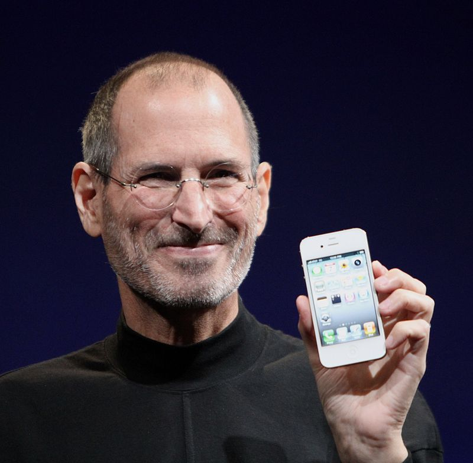

|  | |
|---|---|
| Nombre de nacimiento | Steven Paul Jobs |
| Nacimiento | 24 de febrero de 1955 San Francisco, California, Estados Unidos |
| Fallecimiento | 5 de octubre de 2011 (56 años) Palo Alto, California, Estados Unidos |
| Causa de muerte | Cáncer de páncreas |
| FAMILIA | |
| Padres | Adoptivos: Paul Jobs (1922-1993) y Clara Hagopian (1924-1986)
Biológicos: Abdulfattah "John" Jandali y Joanne Carole Schieble |
| Cónyuge | Laurene Powell (1991-2011) |
| Pareja | Chrisann Brennan |
| Hijos | Lisa Nicole Brennan-Jobs (1978) Reed Paul Jobs (1991) Erin Sienna Jobs (1995) Eve Jobs (1998) |
| Educación | Alma máter Reed College (Portland, Oregón) |
| INFORMACION PROFESIONAL | |
| Ocupación | Empresario |
| Conocido por | Cofundador de Apple y cofundador de Pixar |
| Empleador | Apple |
| Miembro de | Academia Estadounidense de las Artes y las Ciencias |
| RECONOCIMIENTOS | |
|
|
| firma | |